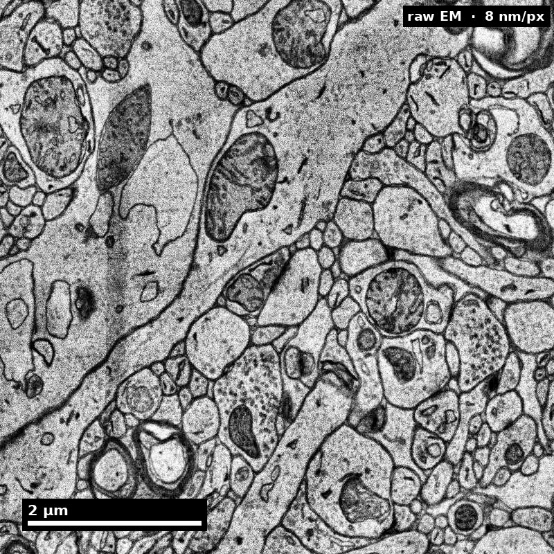

Reading version. Text reflows with your screen and zoom. Figures retain their available captions. Expand teaching notes for additional context and, where supplied, visual descriptions.
Human cortex · H01 Object segmentation over electron microscopy
H01 release · Lichtman Lab / Harvard & Connectomics at Google · CC BY 4.0 Shapson-Coe et al. (2024) · doi:10.1126/science.adk4858
Slide 2 of 22
Learning Objectives
Explain segmentation goals and constraints
Identify merges, splits, and boundary errors
Apply a basic correction workflow
Report segmentation quality with clear metrics
Slide 3 of 22
Capability Target
Detect and categorize core segmentation errors and execute one correction cycle with documented quality impact.
Slide 4 of 22
Concept Focus
1) What segmentation does and why it matters
Segmentation is the computational process of assigning every voxel in an EM volume to a specific object — not just "this is a neuron" but "this is neuron #47,293." This is instance segmentation, and it's the foundation of the entire connectome. Without accurate segmentation, you cannot identify individual neurons, trace their morphology, or determine their synaptic connections. Modern methods (flood-filling networks, U-Net + watershed + agglomeration) achieve "superhuman" accuracy on benchmarks but still make errors at rates that compound across large volumes.
Slide 5 of 22
Core Workflow
Load segmented patch in Neuroglancer or equivalent viewer.
Identify merge/split candidates by scrolling through z and checking 3D meshes for implausible morphology.
Apply correction: split merged segments at the boundary, merge split fragments by verifying continuity.
Recalculate quality indicators: did the correction improve local metrics?
Slide 6 of 22
Core Workflow (continued)
Log decisions: record what was changed, why, and what evidence supported the decision.
Slide 7 of 22
Run of Show (60 min)
00:00-08:00 | Segmentation goals
08:00-22:00 | Error taxonomy with real examples
22:00-36:00 | Guided correction round
36:00-48:00 | Quality metric interpretation
Figure description and teaching notes
Pre-class preparation (10 min async) Read the error taxonomy content library entry Open the practice dataset in Neuroglancer and browse for 5 minutes Minute-by-minute plan
00:00-08:00 | Segmentation goals "What would a perfect segmentation look like? Every neuron correctly labeled, every membrane correctly placed." Show a well-segmented region side-by-side with raw EM. Point out: each color = one neuron. Then show the same region with errors highlighted. "This is reality. Our job is to find and fix these."
08:00-22:00 | Error taxonomy with real examples Walk through one merge error: show the 3D mesh with impossible branching, navigate to the merge point in 2D slices, explain why the model failed (low contrast at a blood vessel). Walk through one split error: show a dead-end axon fragment, then the continuation 3 sections later. Explain: thin process + poor contrast = model lost it. Walk through one boundary error: show a synapse attributed to the wrong neuron because the membrane position is off by 2 pixels. For each: "What would this error do to your analysis?"
22:00-36:00 | Guided correction round Learners work in pairs on 3 pre-identified errors (1 merge, 1 split, 1 ambiguous). Instructor circulates, coaching on: "Show me the evidence before you correct." "What would happen if this merge is actually correct — two branches of the same neuron?"
36:00-48:00 | Quality metric interpretation Introduce: "How do we know if our corrections actually helped?" Brief overview of metrics: edge precision/recall (are the connections right?), segment size distributions (do sizes look biological after correction?). Compute metrics before and after the correction round. Did they improve?
48:00-60:00 | Debrief and competency check Each learner presents one correction with evidence chain. Group discussion: "Which correction had the biggest impact on the graph? Why?" Exit ticket: "Name the error type you found hardest to detect and why."
Slide 8 of 22
Run of Show (60 min) (continued)
48:00-60:00 | Debrief and competency check
Slide 9 of 22
Misconceptions to Watch
Misconception guardrail: merge and split errors are equally costly, so error counts alone rank corrections.
Misconception guardrail: an object that looks like a plausible neuron is evidence that the segmentation is correct.
Misconception guardrail: the most visually obvious errors are the ones most worth fixing.
Misconception guardrail: a segmentation can be finished, rather than released at a stated level with stated remaining error.
Slide 10 of 22
A segmentation is a claim about continuity
The same field, before and after model labels are overlaid.

Underlying imageModel object labels
Discuss: What evidence would you need before calling a merge or split?
H01 release, Lichtman Lab / Harvard and Connectomics at Google; Shapson-Coe et al. (2024), doi:10.1126/science.adk4858; CC BY 4.0.
Figure description and teaching notes
Visual description and discussion guidance: Colors identify model objects, not confidence scores or verified ground truth. Inspect the raw image and continuity across sections before accepting or changing an object’s topology.
Slide 11 of 22
Two reconstruction choices can disagree
Inspect local evidence before choosing a correction.
Left: c2, one object. Right: c3, two objects.
Discuss: Which additional view would help adjudicate this difference?
H01 release, Lichtman Lab / Harvard and Connectomics at Google; Shapson-Coe et al. (2024), doi:10.1126/science.adk4858; CC BY 4.0.
Figure description and teaching notes
Visual description and discussion guidance: The panel labels identify the one-object versus two-object distinction without relying on color alone. This view illustrates reconstruction disagreement; it does not by itself establish the correct biological topology.
Slide 12 of 22
Studio Activity
Scenario: Your team has a freshly segmented 50x50x50 um subvolume containing approximately 200 neuron fragments. Automated error detection has flagged 25 candidate errors. You have time to fix 10.
Slide 13 of 22
Activity Output Checklist
Evidence-linked artifact submitted.
At least one limitation or uncertainty stated.
Revision point captured from feedback.
Slide 14 of 22
Assessment Rubric
Minimum pass
Every flagged candidate carries an error-type label (merge/split/boundary/uncertain), and mislabels affect fewer than 3 of the 25 candidates.
At least one correction is executed with the supporting evidence stated in the log before the edit, not reconstructed afterward.
The correction log records object ID, operation, location, and the specific visual evidence — a reader could re-find the site from the log alone.
Slide 15 of 22
Assessment Rubric (continued)
Before/after quality indicators are computed for at least one correction, with the direction of change stated.
Slide 16 of 22
Assessment Rubric
Strong performance
The priority ranking ties each candidate to its expected effect on the downstream connectivity graph, and merges outrank splits of comparable size with the reason stated.
Before/after metrics are reported for the whole subvolume, and any metric that moved the wrong way is explained rather than omitted.
At least one flagged candidate is explicitly deferred with a recorded reason (cost to fix, ambiguity, outside analysis set) rather than silently skipped.
Slide 17 of 22
Assessment Rubric (continued)
The release note states what remains unexamined and what error types are still expected, not only what was fixed.
Slide 18 of 22
Assessment Rubric
Common failure to flag
Correction without evidence of quality change — fixing things without checking whether it helped.
Ranking by visual conspicuousness rather than by impact on the analysis.
A merge introduced while fixing a split, because continuity was assumed from appearance instead of verified across sections.
Slide 19 of 22
Exit Ticket
Explain when you would defer a correction instead of fixing immediately.
 Nanoscale · Module 06
Nanoscale · Module 06